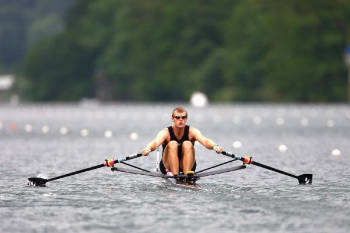

The Official website of FISA, the international rowing federation. Latest
world rowing news

Starting this year, the age categories have been adjusted for masters
rowers. There have been two age categories added to the World Rowing
competition format. This is to encourage more participation, regardless of
age or level.